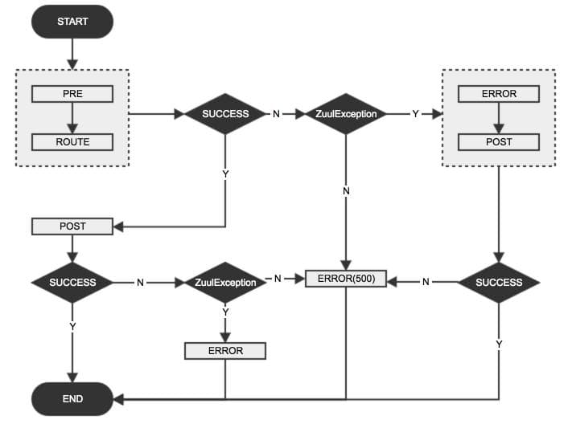
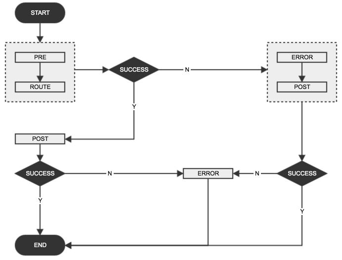

SpringCloud-Zuul 异常处理
2017-05-10
最近看到了一个GitHub issue在讨论如何在post类型的zuul filter中设置response body，其中涉及到异常情况下，如何返回一个自定义的response body。正好我在升级spring-cloud，也想弄清楚，spring-cloud-zuul是如何处理异常情况的，所以就仔细看了看这部分的实现细节，现在做个笔记记录下来。
关于zuul是如何工作的，这里不再介绍，具体可以参看这里。官方给了一个zull请求的生命周期图：
上图中，实线表示请求必然经过的路径，而虚线表示可能经过的路径；从这张图中可以看出：
- 所有请求都必然按照
pre->route->post的顺序执行。 post返回response。- 如果
pre中有自定义filter，则执行自定义filter。 - 如果
pre,route,post发生错误则执行error，然后再执行post。
这张图忽略了很多细节；最明显的就是，自定义的filter可以是pre,route,post,error中的任何一种；其次假如post中发生了异常，执行流程交给error处理完之后，又重新回到post中，会不会又有问题？
所以还是看看代码比较靠谱。以下基于spring-cloud Dalston.RELEASE做代码分析。
调试一下，就可以看到请求进入zuul之后的整个调用链，简单来说如下：ZuulServlet#service -> FilterProcessor#processZuulFilter -> ZuulFilter#runFilter -> [Concret]ZuulFilter#run。
ZuulServlet#service
首先找到请求进入zuul filters的入口：ZuulServlet#service(ServletRequest, ServletResponse)。
下面抽出这个函数的主干：
65 try {
...
73 try {
74 preRoute();
75 } catch (ZuulException e) {
76 error(e);
77 postRoute();
78 return;
79 }
80 try {
81 route();
82 } catch (ZuulException e) {
83 error(e);
84 postRoute();
85 return;
86 }
87 try {
88 postRoute();
89 } catch (ZuulException e) {
90 error(e);
91 return;
92 }
93
94 } catch (Throwable e) {
95 error(new ZuulException(e, 500, "UNHANDLED_EXCEPTION_" + e.getClass().getName()));
96 }
这个函数基本遵从但不完全符合官网给出的生命周期图：
- 正常情况下，请求只经过
pre->route->post。 - 两层
try...catch，内层只捕获ZuulException，而其他异常由外层捕获。 - 内层3个
try...catch语句，只有pre,route抛出ZuulException时，才会执行errror，再执行post。而当post(88行)抛出ZuulException后，只会执行error。 - 外层捕获其他异常(内层
try语句块中抛出的非ZuulException异常以及内层catch语句中抛出的所有异常)后，将HTTP状态码设置为500，同时交给error处理。 - 整个流程的终点有两个：
post及error；而非只有post一个。
另外看一下error(ZuulException)这个函数到底做了什么：
143 void error(ZuulException e) {
144 RequestContext.getCurrentContext().setThrowable(e);
145 zuulRunner.error();
146 }
异常信息是在这里被加入到RequestContext中的，以供后续的filter使用，然后调用error filters。
至此我们可以得到一个流程图(感觉还不如代码看得清晰-_-!!)：

FilterProcessor#processZuulFilter
FilterPreocessor#processZuulFilter，这个函数调用ZuulFilter，并且会将异常重新抛出，如果是非ZuulException的异常，则转为状态码为500的ZuulException。
180 try {
...
186 Throwable t = null;
...
193 ZuulFilterResult result = filter.runFilter();
194 ExecutionStatus s = result.getStatus();
...
197 switch (s) {
198 case FAILED:
199 t = result.getException();
201 break;
...
212 }
213
214 if (t != null) throw t;
219 } catch (Throwable e) {
...
224 if (e instanceof ZuulException) {
225 throw (ZuulException) e;
226 } else {
227 ZuulException ex = new ZuulException(e, "Filter threw Exception", 500, filter.filterType() + ":" + filterName);
229 throw ex;
230 }
231 }
如果ZuulFilter执行失败，即结果状态为FAILED，则从ZuulFilter的执行结果ZuulFilterResult中提取出异常信息(199行)，然后抛出(214)；在catch语句块中，捕获刚才抛出的异常，判断是否为ZuulException，如果是则直接抛出，否则转化为状态为500的ZuulException再抛出。
看到这里，基本确认的一点是，ZuulFilter中抛出的任何形式的异常，最终都会转化为ZuulException抛给上层调用者，即ZuulServlet#service。但是这里并不是通过try...catch来捕获ZuulFilter执行中抛出的异常，而是从返回结果ZuulFilterResult中直接获取的，这是怎么一回事，需要再看下ZuulFilter#runFilter的实现逻辑。
ZuulFilter#runFilter
下面是从ZuulFilter#runFilter()抽取出来的核心代码：
111 ZuulFilterResult zr = new ZuulFilterResult();
...
115 try {
116 Object res = run();
117 zr = new ZuulFilterResult(res, ExecutionStatus.SUCCESS);
118 } catch (Throwable e) {
120 zr = new ZuulFilterResult(ExecutionStatus.FAILED);
121 zr.setException(e);
122 }
...
129 return zr;
这段代码会调用某个具体的ZuulFilter实现的run方法，如果不抛出异常，则返回状态为ExecutionStatus.SUCCESS的ZuulFilterResult(117行)；若有任何异常，则将返回结果的状态设置为ExecutionStatus.FAILED(120)，同时将异常信息设置到返回结果中(121)。即我们实现一个ZuulFilter，如果不抛出异常，则会被认为是成功的，否则就会被当作失败的。
结合上面两节的代码分析，ZuulFilter中一旦有异常抛出，必然是(或被转化为)ZuulException，然后必然进入到error filters中处理。由此，我们简化一下上面的流程图：

SpringCloud中的SendErrorFilter
在Dalston.RELEASE之前，spring-cloud-netflix中并不包含error类型的Filter；而处理错误情况的filter为SendErrorFilter，其类型为post，order为0，比SendResponseFilter优先级高(1000)，即更早调用。先来分析一下Dalston.RELEASE之前版本的SendErrorFilter，下面的代码片段摘自spring-cloud-netflix 1.2.7.RELEASE：
38 @Value("${error.path:/error}")
39 private String errorPath;
...
51 @Override
52 public boolean shouldFilter() {
53 RequestContext ctx = RequestContext.getCurrentContext();
54 // only forward to errorPath if it hasn't been forwarded to already
55 return ctx.containsKey("error.status_code")
56 && !ctx.getBoolean(SEND_ERROR_FILTER_RAN, false);
57 }
58
59 @Override
60 public Object run() {
...
65 int statusCode = (Integer) ctx.get("error.status_code");
66 request.setAttribute("javax.servlet.error.status_code", statusCode);
...
69 Object e = ctx.get("error.exception");
71 request.setAttribute("javax.servlet.error.exception", e);
...
75 String message = (String) ctx.get("error.message");
76 request.setAttribute("javax.servlet.error.message", message);
...
79 RequestDispatcher dispatcher = request.getRequestDispatcher(
80 this.errorPath);
...
84 dispatcher.forward(request, ctx.getResponse());
...
92 }
从上面的代码中可以得出以下几点：
SendErrorFilter的进入条件是：RequestContext中包含error.status_code，且之前从未执行过该filter。(55, 56)- 会将错误信息转发给
errorPath执行；errorPath可由配置项error.paht指定，默认为/error。(38, 79, 84) - 转发的错误信息是从
RequestContext中的三个key得到：error.status_code,error.exception,error.message。(65~76)
如果要使用SendErrorFilter，则我们在自己实现自定义ZuulFilter做异常处理的时候，需要注意：
- 如果是
pre,route类型的filter，则捕获所有内部异常，将异常信息设置到error.message中，设置所需返回的HTTP状态码到error.status_code中；然后抛出一个异常。抛出异常是为了将执行流程交给error->post这个执行分支；否则，当前filter会被认为执行成功，继续执行后续的filter。run()方法抛出的异常需是(或继承)RuntimeException，因为IZuulFilter#run()接口没有显示抛出异常。 - 如果是
post类型：- 设置该filter的
order，小于0(这是SendErrorFilter)。 - 仔细考虑
shouldFilter()的实现细节，因为异常流也会进入postfilters，确定是否需要处理。 run()方法中捕获所有异常，然后设置error.status_code,error.message,error.exception，并且不再抛出异常。否则会进入errorfilters，但是现在没有，由SendErrorFilter替代；除非自己实现一个errorfilter，然后禁掉SendErrorFilter。
- 设置该filter的
这个版本中，spring-cloud-netflix提供的这个SendErrorFilter有明显的缺陷，无法处理由post filters抛出的异常，也不符合zuul请求的生命周期图。所以在Dalston.RELEASE之后，即spring-cloud-netflix 1.3.0.RELEASE，将SendErrorFilter的类型改为了error。
下面的代码片段摘自spring-cloud-netflix 1.3.0.RELEASE的SendErrorFilter类:
51 @Override
52 public String filterType() {
53 return ERROR_TYPE;
54 }
...
61 @Override
62 public boolean shouldFilter() {
63 RequestContext ctx = RequestContext.getCurrentContext();
64 // only forward to errorPath if it hasn't been forwarded to already
65 return ctx.getThrowable() != null
66 && !ctx.getBoolean(SEND_ERROR_FILTER_RAN, false);
67 }
68
69 @Override
70 public Object run() {
...
73 ZuulException exception = findZuulException(ctx.getThrowable());
...
76 request.setAttribute("javax.servlet.error.status_code", exception.nStatusCode);
79 request.setAttribute("javax.servlet.error.exception", exception);
82 request.setAttribute("javax.servlet.error.message", exception.errorCause);
...
98 }
99
100 ZuulException findZuulException(Throwable throwable) {
101 if (throwable.getCause() instanceof ZuulRuntimeException) {
102 // this was a failure initiated by one of the local filters
103 return (ZuulException) throwable.getCause().getCause();
104 }
...
118 }
需要注意几点：
- 类型为
error(53行)。 - 进入条件为：
RequestContext中有异常，并且该filter从未执行过(65, 66)。异常对象是在ZuulServlet#error(ZuulException)方法中设置的。 run()方法中提取错误信息不再是从RequestContext的三个key(error.status_code,error.message,error.exception)中获取；而是直接从ZuulException对象中获取(73~82)。- 如何取得
ZuulException对象(100~118)，最重要的一点是从ZuulRuntimeException中提取ZuulException对象(101~103)，而ZuulRuntimeException继承RuntimeException。 - 注意101行代码，是判断
throwable.getCause()是否为ZuulRuntimeException，这是因为所有非ZuulException的异常在FilterProcessor#processZuulFilter()(227行)中会被转化为ZuulException。 findZuulException没有贴全，其会优先从自定义filter中抛出的ZuulRuntimeException中提取ZuulException对象。这样就允许我们返回我们想要的错误信息和HTTP状态码。
那基于1.3.0.RELEASE，我们在写自定义filter时，如何做异常处理呢：
- 将filter内部异常转化为
ZuulException，设置自己需要返回的HTTP状态码，然后包装为ZuulRuntimeException抛出。 - 如若不封装为
ZuulRuntimeException，则返回的HTTP状态码为500。
举个例子：
public Object run() {
try {
// do something
} catch (Throwable t) {
throw new ZuulRuntimeException(new ZuulException(t, HttpStatus.BAD_REQUEST.value(), t.getMessage()));
}
return null;
}
如果想自定义返回的异常信息的response body的格式，最简单的方法是仿照BasicErrorController重写一下/error接口。